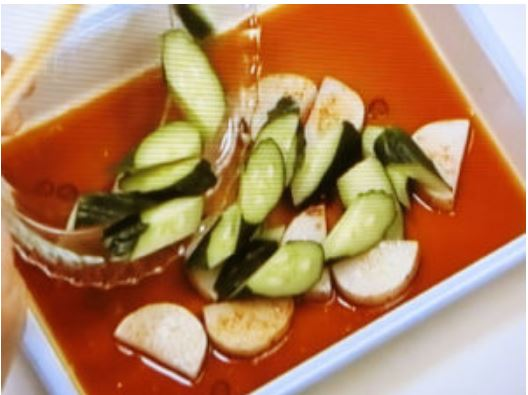
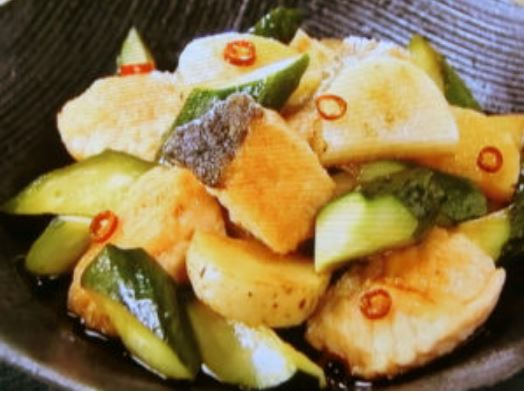

"いいな!"と思った記事を選んでまとめています。
調理時間 : 約13分
A
小さめの鍋にAの酢(大さじ3)・しょうゆ(大さじ2)・みりん(大さじ2)・赤とうがらし(小口切り (小)1本分)を入れて中火にかけ、煮立ったら火を止め、バットに移して冷まします(南蛮酢)。 長芋(200g)はよく洗い皮付きのまま1cm厚さの半月切りにします。 きゅうり(1本(100g))は長めの乱切りにします。 生ざけ(切り身 2切れ(200g))は1切れを4～5等分に切り、小麦粉適量を薄くまぶします。
フライパンにサラダ油大さじ1を中火で熱し、長芋を入れます。薄い焼き色がついたら返して両面を焼きます。 火を止め、1の南蛮酢に入れ、きゅうりも加えてなじませます。
フライパンにサラダ油小さじ2を足して中火で熱し、さけを皮を下にして並べ入れます。焼き色がついたら返し、約3分間焼きます。 火を止めて南蛮酢に加え、約15分間おいてなじませます。
以上！
参考URL : こちら